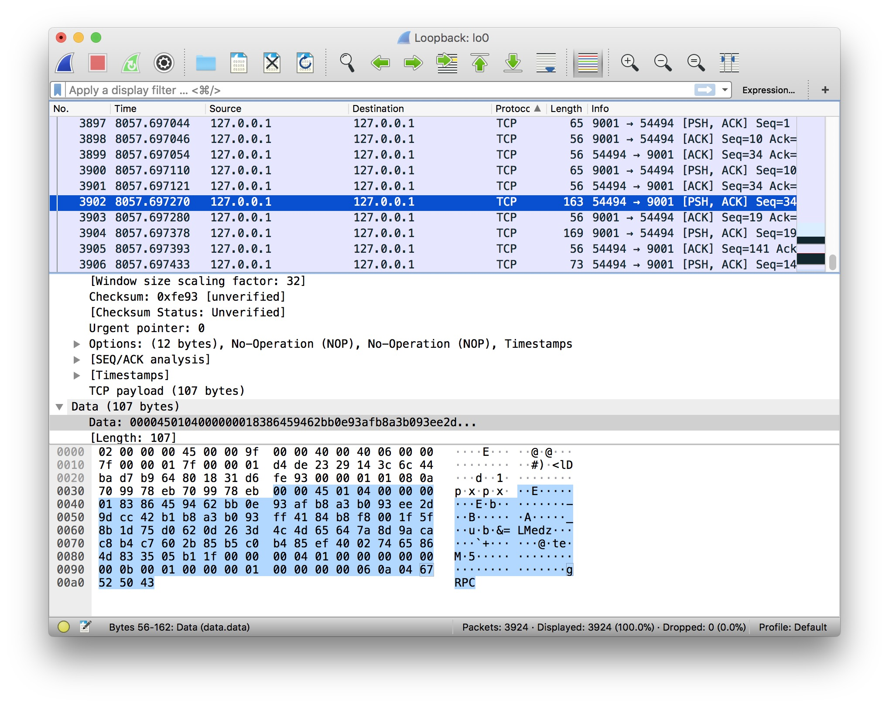
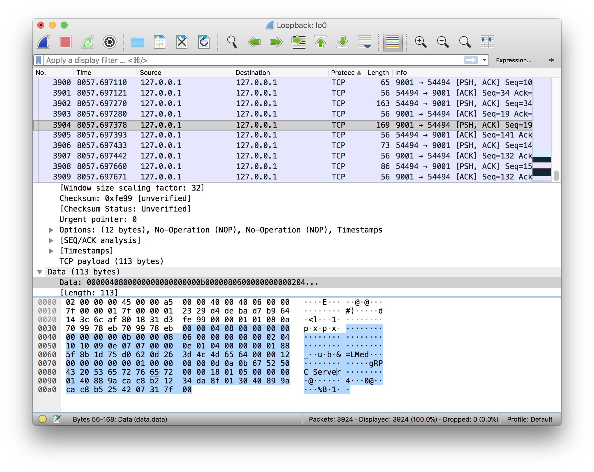
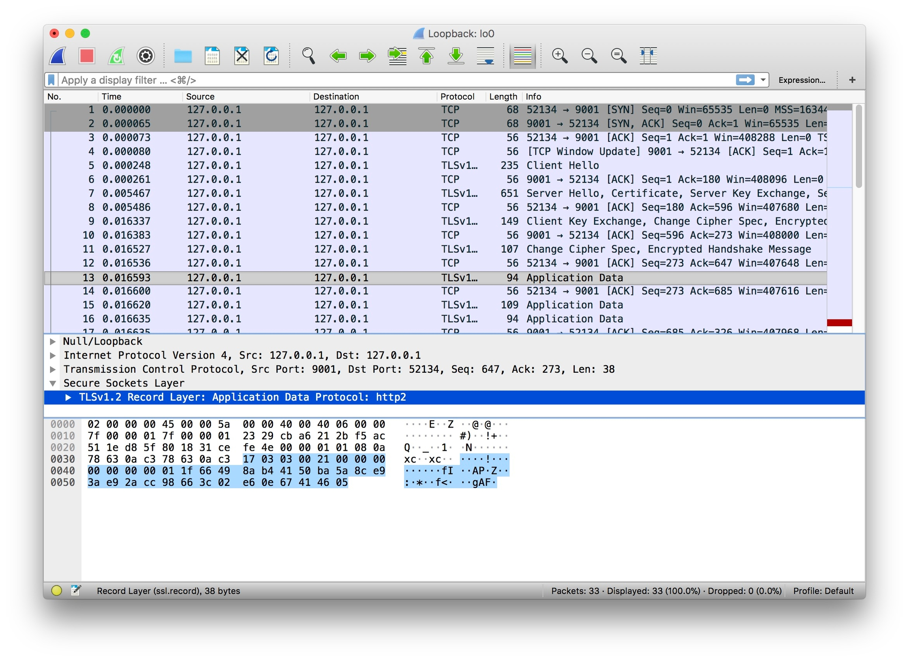

4.4 TLS 證書認證
專案地址：https://github.com/EDDYCJY/go-grpc-example
前言
在前面的章節裡，我們介紹了 gRPC 的四種 API 使用方式。是不是很簡單呢 😀
此時存在一個安全問題，先前的例子中 gRPC Client/Server 都是明文傳輸的，會不會有被竊聽的風險呢？
從結論上來講，是有的。在明文通訊的情況下，你的請求就是裸奔的，有可能被第三方惡意篡改或者偽造為“非法”的資料
抓個包


嗯，明文傳輸無誤。這是有問題的，接下將改造我們的 gRPC，以便於解決這個問題 😤
證書生成
私鑰
openssl ecparam -genkey -name secp384r1 -out server.key
自籤公鑰
openssl req -new -x509 -sha256 -key server.key -out server.pem -days 3650
填寫資訊
Country Name (2 letter code) []:
State or Province Name (full name) []:
Locality Name (eg, city) []:
Organization Name (eg, company) []:
Organizational Unit Name (eg, section) []:
Common Name (eg, fully qualified host name) []:go-grpc-example
Email Address []:
生成完畢
生成證書結束後，將證書相關檔案放到 conf/ 下，目錄結構：
$ tree go-grpc-example
go-grpc-example
├── client
├── conf
│ ├── server.key
│ └── server.pem
├── proto
└── server
├── simple_server
└── stream_server
由於本文偏向 gRPC，詳解可參見 《製作證書》。後續番外可能會展開細節描述 👌
為什麼之前不需要證書
在 simple_server 中，為什麼“啥事都沒幹”就能在不需要證書的情況下執行呢？
Server
grpc.NewServer()
在服務端顯然沒有傳入任何 DialOptions
Client
conn, err := grpc.Dial(":"+PORT, grpc.WithInsecure())
在客戶端留意到 grpc.WithInsecure() 方法
func WithInsecure() DialOption {
return newFuncDialOption(func(o *dialOptions) {
o.insecure = true
})
}
在方法內可以看到 WithInsecure 返回一個 DialOption，並且它最終會透過讀取設定的值來停用安全傳輸
那麼它“最終”又是在哪裡處理的呢，我們把視線移到 grpc.Dial() 方法內
func DialContext(ctx context.Context, target string, opts ...DialOption) (conn *ClientConn, err error) {
...
for _, opt := range opts {
opt.apply(&cc.dopts)
}
...
if !cc.dopts.insecure {
if cc.dopts.copts.TransportCredentials == nil {
return nil, errNoTransportSecurity
}
} else {
if cc.dopts.copts.TransportCredentials != nil {
return nil, errCredentialsConflict
}
for _, cd := range cc.dopts.copts.PerRPCCredentials {
if cd.RequireTransportSecurity() {
return nil, errTransportCredentialsMissing
}
}
}
...
creds := cc.dopts.copts.TransportCredentials
if creds != nil && creds.Info().ServerName != "" {
cc.authority = creds.Info().ServerName
} else if cc.dopts.insecure && cc.dopts.authority != "" {
cc.authority = cc.dopts.authority
} else {
// Use endpoint from "scheme://authority/endpoint" as the default
// authority for ClientConn.
cc.authority = cc.parsedTarget.Endpoint
}
...
}
gRPC
接下來我們將正式開始編碼，在 gRPC Client/Server 上實作 TLS 證書認證的支援 🤔
TLS Server
package main
import (
"context"
"log"
"net"
"google.golang.org/grpc"
"google.golang.org/grpc/credentials"
pb "github.com/EDDYCJY/go-grpc-example/proto"
)
...
const PORT = "9001"
func main() {
c, err := credentials.NewServerTLSFromFile("../../conf/server.pem", "../../conf/server.key")
if err != nil {
log.Fatalf("credentials.NewServerTLSFromFile err: %v", err)
}
server := grpc.NewServer(grpc.Creds(c))
pb.RegisterSearchServiceServer(server, &SearchService{})
lis, err := net.Listen("tcp", ":"+PORT)
if err != nil {
log.Fatalf("net.Listen err: %v", err)
}
server.Serve(lis)
}
- credentials.NewServerTLSFromFile：根據服務端輸入的證書檔案和金鑰構造 TLS 憑證
func NewServerTLSFromFile(certFile, keyFile string) (TransportCredentials, error) {
cert, err := tls.LoadX509KeyPair(certFile, keyFile)
if err != nil {
return nil, err
}
return NewTLS(&tls.Config{Certificates: []tls.Certificate{cert}}), nil
}
- grpc.Creds()：返回一個 ServerOption，用於設定伺服器連線的憑據。用於
grpc.NewServer(opt ...ServerOption)為 gRPC Server 設定連線選項
func Creds(c credentials.TransportCredentials) ServerOption {
return func(o *options) {
o.creds = c
}
}
經過以上兩個簡單步驟，gRPC Server 就建立起需證書認證的服務啦 🤔
TLS Client
package main
import (
"context"
"log"
"google.golang.org/grpc"
"google.golang.org/grpc/credentials"
pb "github.com/EDDYCJY/go-grpc-example/proto"
)
const PORT = "9001"
func main() {
c, err := credentials.NewClientTLSFromFile("../../conf/server.pem", "go-grpc-example")
if err != nil {
log.Fatalf("credentials.NewClientTLSFromFile err: %v", err)
}
conn, err := grpc.Dial(":"+PORT, grpc.WithTransportCredentials(c))
if err != nil {
log.Fatalf("grpc.Dial err: %v", err)
}
defer conn.Close()
client := pb.NewSearchServiceClient(conn)
resp, err := client.Search(context.Background(), &pb.SearchRequest{
Request: "gRPC",
})
if err != nil {
log.Fatalf("client.Search err: %v", err)
}
log.Printf("resp: %s", resp.GetResponse())
}
- credentials.NewClientTLSFromFile()：根據客戶端輸入的證書檔案和金鑰構造 TLS 憑證。serverNameOverride 為服務名稱
func NewClientTLSFromFile(certFile, serverNameOverride string) (TransportCredentials, error) {
b, err := ioutil.ReadFile(certFile)
if err != nil {
return nil, err
}
cp := x509.NewCertPool()
if !cp.AppendCertsFromPEM(b) {
return nil, fmt.Errorf("credentials: failed to append certificates")
}
return NewTLS(&tls.Config{ServerName: serverNameOverride, RootCAs: cp}), nil
}
- grpc.WithTransportCredentials()：返回一個設定連線的 DialOption 選項。用於
grpc.Dial(target string, opts ...DialOption)設定連線選項
func WithTransportCredentials(creds credentials.TransportCredentials) DialOption {
return newFuncDialOption(func(o *dialOptions) {
o.copts.TransportCredentials = creds
})
}
驗證
請求
重新啟動 server.go 和執行 client.go，得到響應結果
$ go run client.go
2018/09/30 20:00:21 resp: gRPC Server
抓個包

成功。
總結
在本章節我們實作了 gRPC TLS Client/Servert，你以為大功告成了嗎？我不 😤
問題
你仔細再看看，Client 是基於 Server 端的證書和服務名稱來建立請求的。這樣的話，你就需要將 Server 的證書透過各種手段給到 Client 端，否則是無法完成這項任務的
問題也就來了，你無法保證你的“各種手段”是安全的，畢竟現在的網路環境是很危險的，萬一被...
我們將在下一章節解決這個問題，保證其可靠性 🙂